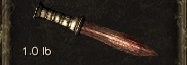

| Pugio - A traditional imperial wide-bladed dagger. Originally a digging and back-up stabbing weapon of the legions, the pugio quickly became a popular choice among both respectable citizens and street thugs | Speed AP 3, THC Bonus 3%, CS Bonus 10%, Passive Value Bonus 8% Bronze:Damage 3-6, Hardness 5%> Iron:Damage 4-7, Hardness 15% Steel:Damage 5-8, Hardness 25% Blue Steel:Damage 6-9, Hardness 35% Meteor Metal:Damage 7-10, Hardness 45% |  |
| Jambia - A curved Scythian "honor" dagger. Once an oddity, the jambia became a common weapon of many street gangs, which had flourished after the fall of the Empire. | Speed AP 3 THC Bonus 6%, CS Bonus 5%, Passive Value Bonus 4% Bronze:Damage 3-6, Hardness 5% Iron:Damage 4-7, Hardness 15% Steel:Damage 5-8, Hardness 25% Blue Steel:Damage 6-9, Hardness 35% Meteor Metal:Damage 7-10, Hardness 45% | |
| Sefet - A simple, straight Kemetian dagger favored by those who care less about style than the ease with which the Sefet slips between an enemy's ribs. | Speed AP 3, THC Bonus 3%, CS Bonus 5%, Passive Value Bonus 8% Bronze:Damage 3-6, Hardness 5% Iron:Damage 4-7, Hardness 15% Steel:Damage 5-8, Hardness 25% Blue Steel:Damage 6-9, Hardness 35% Meteor Metal:Damage 7-10, Hardness 45% |  |
| Yatagan - A single-edged, recurved Turuk long blade. The recurved design has been ignored by the Empire's swordsmen, but was welcomed by knife fighters, who adopted the yatagan as a deadly and effective long dagger. | Speed AP 4, THC Bonus 3%, Passive Value Bonus 4% Bronze:Damage 5-8, Hardness 25% Iron:Damage 6-9, Hardness 35% Steel:Damage 7-10, Hardness 45% Blue Steel:Damage 8-11, Hardness 55% Meteor Metal:Damage 9-12, Hardness 65% | |
| Khanjar - A long, serpetine dagger from the Avagan Steppes. The wavy blade has a reputation for inflicting devastating wounds, but it is the length that makes the khanjar deadly. | Speed AP 4, THC Bonus 6%, Passive Value Bonus 4% Bronze:Damage 5-8, Hardness 20% Iron:Damage 6-9, Hardness 30% Steel:Damage 7-10, Hardness 40% Blue Steel:Damage 8-11, Hardness 50% Meteor Metal:Damage 9-12, Hardness 60% |
| Gladius - A double-edged short sword designed for thrusting and slashing in close quarters. Favored by the Imperial Guard, the gladius is a common sight throughout the remnants of the Empire. | Speed AP 4, THC Bonus 3% Bronze:Damage 5-8, Hardness 30% Iron:Damage 6-9, Hardness 40% Steel:Damage 7-10, Hardness 50% Blue Steel:Damage 8-11, Hardness 60% Meteor Metal:Damage 9-12, Hardness 70% |  |
| Khopesh - A sickle sword of Kametian origin. The khopesh evolved from the crescent-bladed axe, resulting in a versatile double-edged weapon that may surprise even seasoned opponents. | Speed AP 4, THC Bonus 3%, Passive Chance Bonus 8% Bronze:Damage 5-8, Hardness 20% Iron:Damage 6-9, Hardness 30% Steel:Damage 7-10, Hardness 40% Blue Steel:Damage 8-11, Hardness 50% Meteor Metal:Damage 9-12, Hardness 60% | |
| Handar - A heavy, double-edged Bactrian broadsword with a wide, triangular blade. The handar is one of the most powerful one-handed weapons, built for slow, but devastating attacks | Speed AP 5 Bronze:Damage 7-10, Hardness 50% Iron:Damage 8-11, Hardness 60% Steel:Damage 9-12, Hardness 70% Blue Steel:Damage 10-13, Hardness 80% Meteor Metal:Damage 11-14, Hardness 90% | |
| Shamshir - A single-edged, deeply curved sword with a slim blade. While the shamshir is more suitable for cutting and slashing attacks, it's more than capable of delivering rising, descending, and hooking thrusts | Speed AP 5, Passive Chance Bonus 12% Bronze:Damage 7-10, Hardness 35% Iron:Damage 8-11, Hardness 45% Steel:Damage 9-12, Hardness 55% Blue Steel:Damage 10-13, Hardness 65% Meteor Metal:Damage 11-14, Hardness 75% | |
| Scimitar - A two-handed, heavy Ashkaanian sword with an oversized, curved, single-edged blade designed to mow through anything that stands in front of you. The weight adds impressive power to the strike, but makes the sword more difficult to control. | Speed AP 6, Counterattack Chance Bonus 5% Bronze:Damage 9-12, Hardness 60% Iron:Damage 10-13, Hardness 70% Steel:Damage 11-14, Hardness 80% Blue Steel:Damage 12-15, Hardness 90% Meteor Metal:Damage 13-16, Hardness 100% |
| Zaghnal - An elaborately decorated Scythian fighting axe with a crow's beak-shaped blade designed for greater armor penetration. Innumerable skirmishes between the legions and the desert tribes ensured a steady supply of Scythian weaponry. | Speed AP 4, THC Bonus 6% Bronze:Damage 5-8, Hardness 25% Iron:Damage 6-9, Hardness 35% Steel:Damage 7-10, Hardness 45% Blue Steel:Damage 8-11, Hardness 55% Meteor Metal:Damage 9-12, Hardness 65% | |
| Skeggox - A deadly bearded axe, introduced to the protectorates of the former Empire by Skanian raiders. The skeggox's unusual blade provides an ample surface for slashing, while keeping the weight low. | Speed AP 5, Passive Chance Bonus 8% Bronze:Damage 7-10, Hardness 40% Iron:Damage 8-11, Hardness 50% Steel:Damage 9-12, Hardness 60% Blue Steel:Damage 10-13, Hardness 70% Meteor Metal:Damage 11-14, Hardness 80% | |
| Mineb - The unusual Kemetian one handed axe known as the mineb reflects a different school of weapon design. Over the centuries, many of these ornately decorated, gold-encrusted axes were brought from Kemet as gifts. Now they are to be found all over the Empire. | Speed AP 5, THC Bonus 3% Bronze:Damage 7-10, Hardness 45% Iron:Damage 8-11, Hardness 55% Steel:Damage 9-12, Hardness 65% Blue Steel:Damage 10-13, Hardness 75% Meteor Metal:Damage 11-14, Hardness 85% | |
| Shadhavar - A two-handed Scythian axe whose design was inspired by the mythical death-bringing horned gazelle. The Shadhavar is a rare, beautiful, and effective weapon with a gracefully curved cutting surface, augmented by deadly spearpoints. | Speed AP 6, THC Bonus 6%, Counterattack Chance Bonus 5% Bronze:Damage 9-12, Hardness 50% Iron:Damage 10-13, Hardness 60% Steel:Damage 11-14, Hardness 70% Blue Steel:Damage 12-15, Hardness 80% Meteor Metal:Damage 13-16, Hardness 90% |  |
| Labrys - A heavy two-handed Minoan axe. For the Minoans, the labrys was a religious and ceremonial symbol, but the Empire turned it to more practical applications as a devastating battlefield weapon. | Speed AP 6, Counterattack Chance Bonus 5% Bronze:Damage 9-12, Hardness 65% Iron:Damage 10-13, Hardness 75% Steel:Damage 11-14, Hardness 85% Blue Steel:Damage 12-15, Hardness 95% Meteor Metal:Damage 13-16, Hardness 105% |
| Marculus - a small, one-handed smith's hammer. Typically used for shaping heated metal, it also does a fine job breaking skulls and other fragile objects. | Speed AP 4, THC bonus 9% Bronze:Damage 5-8, Hardness 20% Iron:Damage 6-9, Hardness 30% Steel:Damage 7-10, Hardness 40% Blue Steel:Damage 8-11, Hardness 50% Meteor Metal:Damage 9-12, Hardness 60% | |
| Mallet - Originally a multipurpose work hammer, this wooden hammer was adapted for warfare and reinforced with metal rings and striking surfaces. Due to its lighter weight, the mallet can be efficiently wielded in one hand. | Speed AP 5, THC Bonus 3%, Passive Chance Bonus 8% Bronze:Damage 7-10, Hardness 35% Iron:Damage 8-11, Hardness 45% Steel:Damage 9-12, Hardness 55% Blue Steel:Damage 10-13, Hardness 65% Meteor Metal:Damage 11-14, Hardness 75% | |
| Spiked Club - The club is thought by many loremasters to be the earliest weapon used by man. This evolution of the humble club features a long metal head bristling with two inch spikes. | Speed AP 5, THC Bonus 3%, Passive Chance Bonus 4%, Critical Strike Bonus 5% Bronze:Damage 7-10, Hardness 35% Iron:Damage 8-11, Hardness 45% Steel:Damage 9-12, Hardness 55% Blue Steel:Damage 10-13, Hardness 65% Meteor Metal:Damage 11-14, Hardness 75% | |
| War hammer - A brutal Skanian two-handed hammer. The Skanians designed the war hammer in response to hard lessons at the hands of the Imperial Legions, who taught the raiders to respect and fear armored opponents. | Speed AP 6, THC Bonus 3%, Passive Chance Bonus 8% Bronze:Damage 9-12, Hardness 50% Iron:Damage 10-13, Hardness 60% Steel:Damage 11-14, Hardness 70% Blue Steel:Damage 12-15, Hardness 80% Meteor Metal:Damage 13-16, Hardness 90% | |
| Sledgehammer - A heavy, two-handed hammer with a massive head. Not a weapon for those who prefer subtlety or finesse, the sledgehammer is brutally effective for its purpose. The chiseled ram's head design points to Kemetian origin. | Speed AP 6, Passive Chance Bonus 12% Bronze:Damage: 9-12, Hardness 50% Iron:Damage: 10-13, Hardness 60% Steel:Damage: 11-14, Hardness 70% Blue Steel:Damage: 12-15, Hardness 80% Meteor Metal:Damage: 13-16, Hardness 90% |
| Hasta - A standard issue Imperial short spear with a broad triangular blade. The hasta can be carried in one hand and used with a shield. | Speed AP 4, THC Bonus 9%, Passive Chance Bonus 8% Bronze:Damage 5-8, Hardness 20% Iron:Damage 6-9, Hardness 30% Steel:Damage 7-10, Hardness 40% Blue Steel:Damage 8-11, Hardness 50% Meteor Metal:Damage 9-12, Hardness 60% | |
| Dori - A spear favored by the hoplitai for its light weight and versatility. The leaf-shaped head can be used for thrusting or slashing. The dori is too heavy to use single-handed. | Speed AP 5, THC Bonus 6%, Passive Bonus Chance 4% Bronze:Damage 7-10, Hardness 35% Iron:Damage 8-11, Hardness 45% Steel:Damage 9-12, Hardness 55% Blue Steel:Damage 10-13, Hardness 65% Meteor Metal:Damage 11-14, Hardness 75% | |
| Romach - A long Thracian spear with a blade designed for use against lightly armored infantry and cavalry. The heavy shaft requires two hands to wield effectively. | Speed AP 5, Passive Chance Bonus 12% Bronze:Damage 7-10, Hardness 35% Iron:Damage 8-11, Hardness 45% Steel:Damage 9-12, Hardness 55% Blue Steel:Damage 10-13, Hardness 65% Meteor Metal:Damage 11-14, Hardness 75% | |
| Krokspar - Literally "barbed spear", the krokspar is a long-shafted weapon of Skanian design with a dagger-like head a cross piece for blocking. The krokspar is too heavy to use single-handed. | Speed AP 6, THC Bonus 6%, Passive Chance Bonus 4% Bronze:Damage 9-12, Hardness 50% Iron:Damage 10-13, Hardness 60% Steel:Damage 11-14, Hardness 70% Blue Steel:Damage 12-15, Hardness 80% Meteor Metal:Damage 13-16, Hardness 90% | |
| Trident - A three pronged spear with a long shaft, reminiscent of a pitchfork. The trident is scorned by most fighting men, but is a favored weapon of enraged farmers and retiarii gladiators. | Speed AP 6, THC Bonus 3%, Passive Chance Bonus 8% Bronze:Damage 9-12, Hardness 50% Iron:Damage 10-13, Hardness 60% Steel:Damage 11-14, Hardness 70% Blue Steel:Damage 12-15, Hardness 80% Meteor Metal:Damage 13-16, Hardness 90% |
| Short bow - A simple bow fashioned from a single piece of elm wood, this weapon lacks power and range, but is quick to shoot and has a low draw weight. It's suitable for small game, animal and otherwise. | Speed AP 5, Reload Speed AP 0, THC Bonus 9% Lumber:Damage 6-9, Capacity 1 | |
| Recurved Ordu Bow - A short, composite birch bow reinforced with deer horn. The Ordu bow is as much a part of the nomads' culture as the horse, and since it takes almost a year to craft a single one, it is never traded, only recovered from dead riders. | Speed AP 5, Reload Speed AP 0, THC Bonus 6% Lumber:Damage 6-9, Capacity 1 | |
| Kemetian bow - A medium-draw bow used by Kemetian charioteers to deadly effect. Unlike most of its brethren, this bow is constructed entirely from horn, and bound to an acacia wood section in the center. | Speed AP 6, Reload Speed AP 0 Lumber:Damage 9-15, Capacity 1 | |
| Recurved Scythian Bow - This long and powerful Scythian bow, famous for it's incurvation, is distinguished by it's triangular center section and smoothly recurved tips. | Speed AP 7, Reload Speed AP 0 Lumber:Damage 12-16, Capacity 1 | |
| Long bow - One of the most powerful bows, the longbow is fashioned from a single length of yew wood. The longbow's power is limited only by the strength of the archer, and in the right hands can punch holes through even plate armor. | Speed AP 7, Reload Speed AP 0 Lumber:Damage 11-18, Capacity 1 |